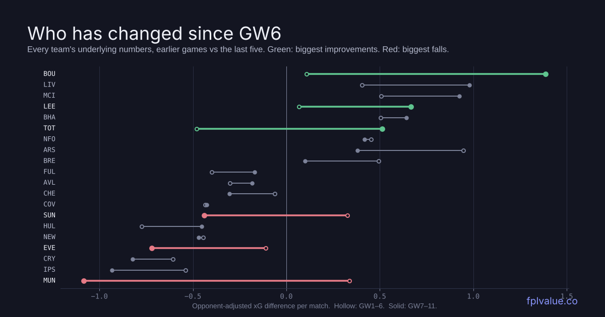

Changes in form: who has improved since GW6, and whose run to ignore
Eleven gameweeks in, some teams look different from the ones that started the season. This post compares every team's underlying numbers from their last five games with the six before, then scores the calls from our GW9 form piece. It finishes with the players whose numbers have changed most in the last four gameweeks.

How to read form
Our research found that five games of results tell you very little about the next five. A team's long-run xG numbers are about three times as useful. So this post uses opponent-adjusted xG difference per match, from FPL's own match xG, instead of points. Five matches is still a small sample, so a big move here is a reason to look closer, not proof. In our backtest, the one thing that predicted a visible turnaround was a gap between the points a team's fixtures say it should get next and the points it got in recent games. That's the "upturn" column at the end.
Improving: Bournemouth, Spurs, Leeds
Bournemouth have won five in a row, and the numbers say it's real. Over the first six games their adjusted xG difference was +0.11 per match, roughly mid-table. Over the last five it's +1.39, the best in the league. That's 2.43 xG for and 1.04 against per game. They're fifth in the table and second on the season's numbers. Tavernier, Evanilson, Hill and Silva all rank in the top six at their positions for GW12–16. The model only expects 9.8 points from their next six games, after 15 from their last six, so expect the winning run to slow down. The team is still good.
Spurs have made the biggest turnaround on defence. They allowed 1.48 xG a game in the first six and 0.95 in the last five. They've won four of five, with three clean sheets. Van Hecke (£5.2m) is the one to own, and Kinsky (£4.4m) is the cheapest keeper in the model's top three.
Leeds have improved at the back too: from 1.39 xG against a game to 0.83, the best in the league over the last five. A 1–0 win over Spurs and a 4–1 win at Chelsea followed. That's why Justin (£4.5m), Bogle and Trafford show up in the value tables. Leeds play Coventry and Ipswich at home in the next three gameweeks.
Declining: United, Sunderland, Everton
Man United are the big one, and they're the call our GW9 piece got wrong. Then, we said United's results were a bad run to ignore because they were fourth by the numbers. Since then they've taken one point from three games, including a 4–4 at home to Villa and a 4–0 defeat at Liverpool. Their xG against over the last five is 2.68 per game, the worst in the league by some distance. The attack is still producing (1.60 xG a game), which is why the model still likes Fernandes and Mbeumo. But United's clean-sheet odds are gone. Any United defender is a sell.
Sunderland have stopped creating. They managed 1.86 xG a game in the first six and 1.11 in the last five. They're 18th, and the numbers have dropped from eighth-best to 14th. Le Fée is still a fine pick on his own numbers, but the team isn't helping him.
Everton have gone the other way at the back: from 1.43 xG against to 1.83, with the 4–0 at Brentford the low point. Tarkowski's suspension makes that worse. Barry is still the best-value forward because his own numbers are so good, but don't double up.
Arsenal are also on the list of falls, but they're top of the table with 13 points from the last five. Their adjusted xG difference has dropped from +0.95 to +0.38, mostly because the attack has gone from 1.78 xG a game to 1.41. The defence is still one of the best. This is a reason not to expect a lot of Arsenal attacking returns, not a reason to sell the defenders.
The bad run to ignore: Man City
City have taken four points from five games: losses at Villa, at home to Brighton and 3–1 at Forest, then the 1–1 with Fulham in GW11. Their underlying numbers have got better over the same period, from +0.51 to +0.92 a game, and they're top of the season's rankings. The model expects 10.4 points from their next six, against 7 from the last six. Haaland's 2 in GW11 came with 6.3 xPts. Don't sell him because of City's results.
All 20 teams
| Team | Table | Last 5 | GW1–6 | GW7–11 | Change | Upturn |
|---|---|---|---|---|---|---|
| Bournemouth | 5 | WWWWW | +0.11 | +1.39 | +1.28 | −5.2 |
| Liverpool | 4 | WWLWW | +0.41 | +0.98 | +0.57 | −1.5 |
| Man City | 3 | WLLLD | +0.51 | +0.92 | +0.42 | +3.4 |
| Leeds | 7 | DDLWW | +0.07 | +0.67 | +0.60 | +1.3 |
| Brighton | 2 | WLWWL | +0.50 | +0.64 | +0.14 | −1.6 |
| Spurs | 10 | WWWLW | −0.48 | +0.51 | +0.99 | −5.1 |
| Nott'm Forest | 17 | LDLWL | +0.45 | +0.42 | −0.03 | +5.2 |
| Arsenal | 1 | WWWWD | +0.95 | +0.38 | −0.57 | −5.2 |
| Brentford | 6 | LDWLW | +0.49 | +0.10 | −0.39 | +0.5 |
| Fulham | 15 | WWDDD | −0.40 | −0.17 | +0.23 | −1.7 |
| Aston Villa | 12 | WWDDD | −0.30 | −0.18 | +0.12 | −1.0 |
| Chelsea | 8 | WLWLL | −0.06 | −0.31 | −0.25 | −1.1 |
| Coventry | 14 | LLWLW | −0.43 | −0.43 | +0.01 | −2.5 |
| Sunderland | 18 | LDLWD | +0.33 | −0.44 | −0.77 | +2.9 |
| Hull | 11 | LDDLW | −0.77 | −0.45 | +0.32 | −0.8 |
| Newcastle | 13 | LWLDD | −0.45 | −0.47 | −0.02 | +2.4 |
| Everton | 9 | LLWWL | −0.11 | −0.72 | −0.61 | −0.2 |
| Crystal Palace | 20 | LLLLL | −0.61 | −0.82 | −0.22 | +4.2 |
| Ipswich | 16 | LDDLL | −0.54 | −0.93 | −0.40 | +0.7 |
| Man United | 19 | DLLDL | +0.34 | −1.08 | −1.42 | +5.2 |
GW1–6 and GW7–11 are opponent-adjusted xG difference per match. Upturn is the points the fixture model expects from GW12–17 minus the points from the last six games. A big positive number means the fixtures and the team's quality point to more points than it has been getting.
Most likely to turn it around: Forest
Forest have the joint-biggest upturn (+5.2), and unlike United their numbers haven't dropped. They've been about the sixth-best side all season and are 17th because they've scored 9 goals from 17.8 xG. The model expects 9.2 points from their next six, against 4 from the last six. Chelsea and Everton at home and Hull away are in the run. As the value report shows, Gibbs-White (£7.8m, 9% owned) and McAtee (£5.5m) are the under-performers to buy.
Palace are the opposite case. Their upturn (+4.2) is mostly because five straight defeats is a low bar. Their numbers are getting worse, they've conceded 27, and the fixtures are hard. Don't buy Palace players for a bounce.
Scorecard: the GW9 calls
| Call | Team | GW9–11 pts | Verdict |
|---|---|---|---|
| Improving | Bournemouth | 9 | Right. Three wins, and the best numbers in the league since. |
| Improving | Brighton | 6 | Right, mostly. Beat City and Brentford, then lost at Hull. |
| Improving | Forest | 3 | Not yet. Still rated well, still not scoring. |
| Declining | Palace | 0 | Right. Three more defeats. |
| Declining | Newcastle | 2 | Right. Two draws and a defeat. |
| Declining | Villa | 3 | Right. Three draws. |
| Ignore the run | Man United | 1 | Wrong. United got worse, and their defence collapsed. |
Five of seven right. The United call is a useful reminder that a long-run rating is slow to react on purpose. Most of the time that's an advantage, because most bad runs are noise. When a team really does change, the rating catches up a few weeks late.
Players: who has changed in the last four gameweeks
This table compares expected goal involvement per 90 minutes in GW8–11 with GW1–7 for midfielders and forwards with at least 270 minutes in each period. Four games is a small sample for one player, so treat these as players to watch.
| Player | Price | Own | xGI/90 GW1–7 | xGI/90 GW8–11 | GW12–16 |
|---|---|---|---|---|---|
| Up | |||||
| Wirtz LIV | £7.4m | 9.6% | 0.32 | 0.71 | 21.8 |
| Barcola LIV | £8.1m | 4.4% | 0.31 | 0.72 | 21.1 |
| Evanilson BOU | £6.6m | 27.3% | 0.54 | 0.83 | 21.3 |
| B.Fernandes MUN | £11.6m | 19.9% | 0.59 | 0.84 | 28.5 |
| N.Jackson AVL | £7.3m | 36.4% | 0.45 | 0.65 | 22.1 |
| Rice ARS | £7.5m | 13.7% | 0.22 | 0.46 | 22.1 |
| McBurnie HUL | £5.5m | 1.9% | 0.21 | 0.56 | 17.3 |
| Down | |||||
| Mbeumo MUN | £7.8m | 17.5% | 0.69 | 0.34 | 24.0 |
| Haaland MCI | £15.8m | 77.8% | 0.94 | 0.64 | 32.3 |
| Rudoni COV | £5.0m | 1.8% | 0.58 | 0.33 | 20.7 |
| Rogers CHE | £8.3m | 54.6% | 0.51 | 0.34 | 21.6 |
| Delap NFO | £5.3m | 1.8% | 0.54 | 0.30 | 17.9 |
Wirtz is the standout. His involvement has more than doubled, he scored 14 in GW11, and Liverpool's next six fixtures are all rated easy. At £7.4m and under 10% owned, he's the most interesting riser. Evanilson is the template option whose numbers back up his points.
Mbeumo is the faller to worry about. His involvement has halved while Fernandes's has gone up, and he played only 21 minutes in GW11. The model still has him fifth among midfielders, on United's attacking numbers, but the recent trend is the wrong way. Haaland has dropped too, but 0.64 per 90 is still bettered by only eight players over those four gameweeks. Rogers, in 55% of squads, is now on the same level as players who cost £3m less.
A few players have also won a starting place recently. Doku (City), Madueke (Arsenal) and Osula (Newcastle) have started all four games since GW8 after starting at most one before. With Saka out until 20 December, Madueke (£6.2m, 0.7% owned) projects 20.4 for GW12–16.
Method: team xG is the sum of FPL's player xG for each match. Opponent adjustment subtracts each opponent's season-average xG conceded (for attack) or created (for defence), relative to the league average. "Upturn" uses the fixture model's expected goals for GW12–17 (data/current/fixture_model.csv), turned into expected points with a Poisson model. All data from the FPL API after GW11. The numbers and chart are generated by blog/review.py. The research behind the approach is in the GW9 form post.